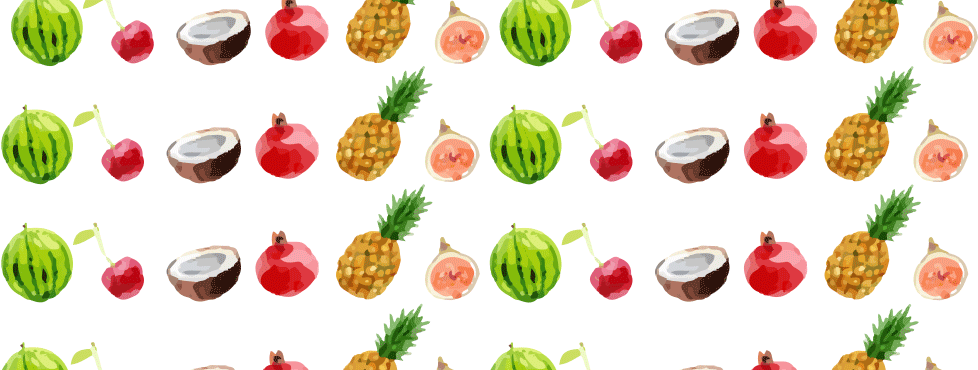
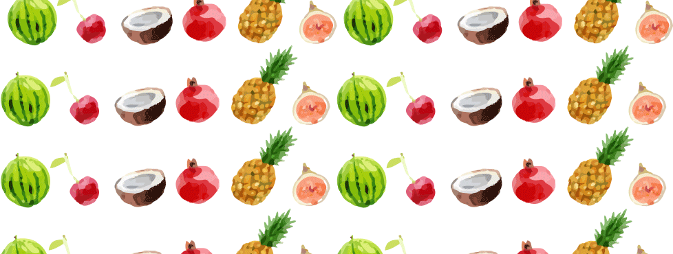

Pilón tropical
Pilón tropical es una linea de dulces creada con el fin de ser una forma saludable de comer dulces, además de sus increibles sabores que logran capturar en su totalidad las futas tropicales. Cuyos ingredientes son solo extracto de fruta natural y Azúcar.